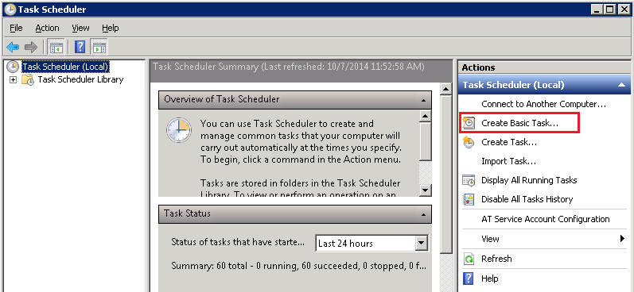
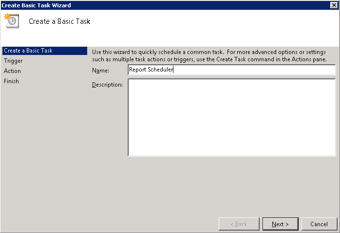
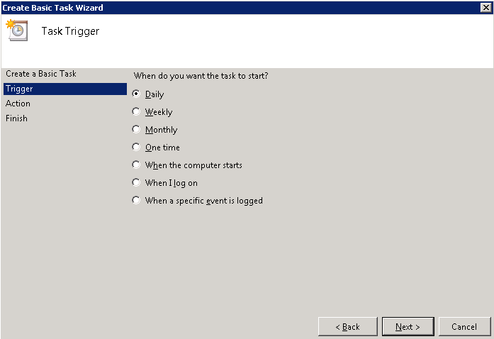

The Report Scheduler requires the creation of a scheduled task.
To set up a scheduled task to generate the report nightly:
Go to Start > Administrative Tools > Task Scheduler.
On the Task Scheduler window, click Create Basic Task.

Name the task (for example, Report Scheduler), and then click Next.

Choose the Daily update frequency, and then click Next.

Set the start date and time for when you want the task first performed. Set the start date to be the current date. Since this process may be long and resource-intensive if many reports are scheduled to be sent, it is advised that you set the time to be during off hours. Click Next to continue.
For Action, select ‘Start a program’, and then click Next.
Click Browse and navigate to the Internet Explorer program (for example, C:\Program Files (x86)\Internet Explorer\iexplore.exe).